| 개발 관리 프 로 세 스 | 문서번호 | ||||||||||||||||||||||||||||||||||||||||||
| 제품 승인 관리 지침서 | MI-0801 | ||||||||||||||||||||||||||||||||||||||||||
| 작 성 팀 | 발 행 팀 | 제 정 일 자 | 작성 | 검토 | 승인 | ||||||||||||||||||||||||||||||||||||||
| 품질팀 | 품질팀 | 2025-05-28 | 결재完 | 결재完 | 결재完 | ||||||||||||||||||||||||||||||||||||||
| NO | 개 정 일 자 | 개 정 사 유 | 개 정 쪽 | 비 고 | |||||||||||||||||||||||||||||||||||||||
| 0 | 2025-05-28 | ||||||||||||||||||||||||||||||||||||||||||
| 1 | |||||||||||||||||||||||||||||||||||||||||||
| 2 | |||||||||||||||||||||||||||||||||||||||||||

| 제품 승인 관리 지침서 | 문서 번호 | MI-0801 | |||||||||||||||||||||||||||||||||||||||||
| 쪽 | 1 | ||||||||||||||||||||||||||||||||||||||||||
| 제정 일자 | 2025.05.28 | 개정 번호 | 1 | 개정 일자 | 2025.05.28 | 시행일자 | #VALUE! | ||||||||||||||||||||||||||||||||||||
| 1. 용어의 정의 | |||||||||||||||||||||||||||||||||||||||||||
| 1.1 ISIR(Initial Sample Inspection Report) | |||||||||||||||||||||||||||||||||||||||||||
| 초도품이 도면 및 사양과 일치하고 기능 및 장착성과 필요시 시험을 통하여 적정 | |||||||||||||||||||||||||||||||||||||||||||
| 품질이 확보되었을 시 승인하는 승인서를 말한다. | |||||||||||||||||||||||||||||||||||||||||||
| 1.2 초도품 (INITIAL PRODUCTION PART) | |||||||||||||||||||||||||||||||||||||||||||
| 당사가 제출하는 END ITEM 단위의 초기부품으로 양산 납품을 전제로 양산과 동일한 | |||||||||||||||||||||||||||||||||||||||||||
| 조건으로 초도 생산된 부품을 말한다. | |||||||||||||||||||||||||||||||||||||||||||
| 1.3 초물, 초품 | |||||||||||||||||||||||||||||||||||||||||||
| 초물은 신제품, 신부품을 말하고, 초품은 설계변경품 및 공정 변경품을 말한다. | |||||||||||||||||||||||||||||||||||||||||||
| 1.4 당사 자체승인 | |||||||||||||||||||||||||||||||||||||||||||
| 당사의 부품이 도면 및 검사협정서에 명기된 모든 항목을 이행한 후 고객 요구 조건 | |||||||||||||||||||||||||||||||||||||||||||
| 만족시, 생산된 제품에 대해 당사의 품질보증 책임자가 보증 승인을 하는 것 이며, | |||||||||||||||||||||||||||||||||||||||||||
| 당사의 자체 승인은 첫번째 초도품 제출 이전에 이루어 져야 한다. | |||||||||||||||||||||||||||||||||||||||||||
| 1.5 고객 최종승인 | |||||||||||||||||||||||||||||||||||||||||||
| 당사의 자체승인후 제출된 초도품에 대해 고객측 품질확인 과정이 끝난 제품에 대하여 | |||||||||||||||||||||||||||||||||||||||||||
| 고객측 초도품 승인부서에서 최종승인을 하는것을 말한다. | |||||||||||||||||||||||||||||||||||||||||||
| 1.6 공급자 | |||||||||||||||||||||||||||||||||||||||||||
| 당사가 요구하는 제품 규격에 의거하여 생산/공급하는 제조공장 및 협력업체(VENDOR) | |||||||||||||||||||||||||||||||||||||||||||
| 를 말한다. | |||||||||||||||||||||||||||||||||||||||||||
| 1.7 관리계획서 (CP, Control Plans) | |||||||||||||||||||||||||||||||||||||||||||
| 제품 및 공정의 중요한 특성 및 엔지니어링 요구사항을 포함하여 부품과 공정을 | |||||||||||||||||||||||||||||||||||||||||||
| 관리하는 시스템 문서로서 공급자에 의해 작성된다. | |||||||||||||||||||||||||||||||||||||||||||
| 1.8 ALL TOOL | |||||||||||||||||||||||||||||||||||||||||||
| 원 / 부자재, 금형, JIG, 전용가공 / 설비 등이 양산용과 동일한 상태. | |||||||||||||||||||||||||||||||||||||||||||
| 1.9 FULL TOOL | |||||||||||||||||||||||||||||||||||||||||||
| ALL TOOL 조건에 추가로 작업자, 환경, 생산 공정 조건 ( 예; FEED, SPEED, | |||||||||||||||||||||||||||||||||||||||||||
| CYCLE TIME, PRESSURE, TEMPERATURE) 등이 양산과 동일한 상태. | |||||||||||||||||||||||||||||||||||||||||||
| 2. 승인 대상 부품 | |||||||||||||||||||||||||||||||||||||||||||
| 2.1 기본적인 경우 | |||||||||||||||||||||||||||||||||||||||||||
| 아래와 같은 사유 발생시 모든 부품은 초도품 승인을 받아야 한다. | |||||||||||||||||||||||||||||||||||||||||||
| 2.2 추가적으로 초도품 승인을 받아야 하는 경우 | |||||||||||||||||||||||||||||||||||||||||||
| 아래와 같은 사유(4M변경)발생시 공급자는 승인 받아야 한다. | |||||||||||||||||||||||||||||||||||||||||||
| 3. 승인대상 항목 | |||||||||||||||||||||||||||||||||||||||||||
| 품질팀은 초도품 승인 대상 부품에 해당되는 경우, 해당 부품마다 아래의 항목을 평가 | |||||||||||||||||||||||||||||||||||||||||||
| (확인, 측정, 시험)하고, 합격시 해당서류를 취합정리하여 부서장의 승인을 득한후 해당 | |||||||||||||||||||||||||||||||||||||||||||
| 서류를 고객에게 제출한다. | |||||||||||||||||||||||||||||||||||||||||||
| 4. 제품 승인 | |||||||||||||||||||||||||||||||||||||||||||
| 4.1 당사 자체승인(내부승인) | |||||||||||||||||||||||||||||||||||||||||||
| 당사에서는 당사가 승인 해야 할 항목 및 고객측과 체결한 검사협정에 따라 초도품을 | |||||||||||||||||||||||||||||||||||||||||||
| 평가(확인, 측정, 검사, 시험) 하고, 그 결과가 고객의 제반 요구조건 및 검사 기준에 합격 | |||||||||||||||||||||||||||||||||||||||||||
| 할 경우, 필요서식을 작성하고, 품질팀장이 당사를 대표하여 자체승인 한다. | |||||||||||||||||||||||||||||||||||||||||||
| 4.2 초도품 제출 | |||||||||||||||||||||||||||||||||||||||||||
| 4.2.1 초도품 제출 방법 | |||||||||||||||||||||||||||||||||||||||||||
| 당사에서는 자체승인 완료된 제품에 대해서 초도품 보증서 또는 초도납품통보서/ | |||||||||||||||||||||||||||||||||||||||||||
| 4M변경통보서를 작성 승인후 초도품과 함께 고객측 해당 부품 개발부서의 승인을 득한 후 | |||||||||||||||||||||||||||||||||||||||||||
| 초도품 승인부문(해당부품 품질부서)에 제출한다. | |||||||||||||||||||||||||||||||||||||||||||
| 4.2.2 초도품의 공급 방법 | |||||||||||||||||||||||||||||||||||||||||||
| 고객측의 제품개발 계획에 의거한 고객과 당사간 협약 또는 통보로 이루어지며 부품의 | |||||||||||||||||||||||||||||||||||||||||||
| 용도에 따라 다음과 같은 경우로 구분되어 공급되어야 한다. | |||||||||||||||||||||||||||||||||||||||||||
| (1) PILOT 시험생산 기종 제작에 필요한 부품의 공급 | |||||||||||||||||||||||||||||||||||||||||||
| (2) 고객 승인부문의 초도품 승인을 위한 확인 및 검사용 부품의 공급 | |||||||||||||||||||||||||||||||||||||||||||
| (3) 기타.(고객의 요구에 의한 부품의 공급) | |||||||||||||||||||||||||||||||||||||||||||
| 4.2.3 초도품의 공급시점 | |||||||||||||||||||||||||||||||||||||||||||
| 당사에서는 고객의 초도품승인팀(부서)이 요구하는 시점에 각종 품질 확인, 검사에 소요 | |||||||||||||||||||||||||||||||||||||||||||
| 되는 초도품을 공급하여야 한다. 단, 초도품 공급 일정상 문제가 예상될 경우 사전에 | |||||||||||||||||||||||||||||||||||||||||||
| 고객측의 허가를 득해야 한다. | |||||||||||||||||||||||||||||||||||||||||||
| 4.2.4 초도품보증서 제출 방법 | |||||||||||||||||||||||||||||||||||||||||||
| 제출되는 모든서류는 고객측 승인부문과 사전에 합의된 경우, 컴퓨터 송신 또는 FAX로 | |||||||||||||||||||||||||||||||||||||||||||
| 제출 할수 있으며 초도품 승인에 관련된 자료의 원본은 초도품 승인처에 보관하되, | |||||||||||||||||||||||||||||||||||||||||||
| 별도의 협의가 있을 경우 협의된 내용과 같이 한다. | |||||||||||||||||||||||||||||||||||||||||||
| 4.3 고객측 최종 승인단계 | |||||||||||||||||||||||||||||||||||||||||||
| 제출된 서류와 SAMPLE이 아래와 같이 만족할 경우 고객측의 승인을 득하고 | |||||||||||||||||||||||||||||||||||||||||||
| 최종 승인을 확인 한다. | |||||||||||||||||||||||||||||||||||||||||||
| 4.3.1 당사의 자체승인이 완료된 초도품인 경우 | |||||||||||||||||||||||||||||||||||||||||||
| 4.3.2 고객 승인부문의 자체평가 과정 에서 합격된 경우 | |||||||||||||||||||||||||||||||||||||||||||
| 4.3.3 고객 완성 기종 (완성품)의 조립 적합성확인 및 고객 장비 품질확인 | |||||||||||||||||||||||||||||||||||||||||||
| 단계에서 합격된 경우 | |||||||||||||||||||||||||||||||||||||||||||
| 4.3.4 기타, 승인 과정중 고객 승인 부문의 제반 요구 사항의 실시가 완결된 경우 | |||||||||||||||||||||||||||||||||||||||||||
| 4.3.5 제출된 제반 서류상 이상이 없는 경우 | |||||||||||||||||||||||||||||||||||||||||||
| 4.4 기각처리 | |||||||||||||||||||||||||||||||||||||||||||
| 제출된 제품이 고객측의 확인 과정 중 요구조건을 만족시키지 못하여 불합격 처리된 | |||||||||||||||||||||||||||||||||||||||||||
| 것을 말하며, 양산 납품이전 수정된 제품 및 근거서류를 재 제출하여 승인받아야 한다. | |||||||||||||||||||||||||||||||||||||||||||
| 4.5 임시승인(현장맞춤) | |||||||||||||||||||||||||||||||||||||||||||
| 임시승인은 아래와 같은 경우, 정해진 수량 또는 일정기간 동안에만 납품할 자격을 | |||||||||||||||||||||||||||||||||||||||||||
| 부여 받는 것으로 아래와 같은 경우 임시승인을 받을 수 있다. | |||||||||||||||||||||||||||||||||||||||||||
| 4.5.1 초도품 승인을 받지 못한 명백한 원인 분석후 개선대책 및 일정계획이 있을 경우 | |||||||||||||||||||||||||||||||||||||||||||
| 4.5.2 최초납품 이전에 고객측 최종 승인이 이루어져야 하나, 현재까지 밝혀진 문제점이 | |||||||||||||||||||||||||||||||||||||||||||
| 없고, 내구품질확인 등 확인기간 지연으로 미승인 부품의 초기 납품의 필요성이 | |||||||||||||||||||||||||||||||||||||||||||
| 있을 경우 | |||||||||||||||||||||||||||||||||||||||||||
| 4.5.3 양산선행 투입이전 설계 변경사항의 적용시점을 명확히 하기위해 실시한 | |||||||||||||||||||||||||||||||||||||||||||
| 회의 결과 불가피하게 초도품 미승인 부품을 양산선행에 적용할 경우 | |||||||||||||||||||||||||||||||||||||||||||
| 4.5.4 임시 승인의 경우, 초도품 승인 세부항목 중 승인받지 못한 해당 항목에 한해 임시 | |||||||||||||||||||||||||||||||||||||||||||
| 승인기간 만료전 승인받아야 한다. | |||||||||||||||||||||||||||||||||||||||||||
| 5. 고객 승인 제출 자료 | |||||||||||||||||||||||||||||||||||||||||||
| 5.1 고객 승인 제출 서류 | |||||||||||||||||||||||||||||||||||||||||||
| 5.2 절차상 요구되는 사항 | |||||||||||||||||||||||||||||||||||||||||||
| 5.2.1 치수평가 | |||||||||||||||||||||||||||||||||||||||||||
| (1) 치수검사는 그 부품에 대해 설계사양에 의해 작성된 검사기준서를 만족하는지 판단 | |||||||||||||||||||||||||||||||||||||||||||
| 할 수 있도록 모든 부품(ASSY,단품)을 측정하여야 하며, 측정일자는 반드시 기록 | |||||||||||||||||||||||||||||||||||||||||||
| 되어야 한다. | |||||||||||||||||||||||||||||||||||||||||||
| (2) 설계도면상 반영되지 않았더라도 실제품에 사전 반영된 사양변경은 그 변경내용 및 | |||||||||||||||||||||||||||||||||||||||||||
| 수준을 검사기준서에 기록하여야 한다. | |||||||||||||||||||||||||||||||||||||||||||
| 5.2.3 재질시험 | |||||||||||||||||||||||||||||||||||||||||||
| (1) 재질 시험은 제품의 모든 부품에 규정된 대로 화학적, 물리적, 금속학적인 시험이 | |||||||||||||||||||||||||||||||||||||||||||
| 실시 되어야 한다. 단 고객 사급품일 경우, 증빙서류 첨부시 재질시험을 생략할 수 | |||||||||||||||||||||||||||||||||||||||||||
| 있다. | |||||||||||||||||||||||||||||||||||||||||||
| (2) 고객이 요구하는 시험을 수행할 당사에서는 원칙적으로 품질(시험)부서에 의해 각 | |||||||||||||||||||||||||||||||||||||||||||
| 시험 항목별로 시험 능력을 인정받은 상태여야 하며, 그러하지 못한 경우 당사는 공인 | |||||||||||||||||||||||||||||||||||||||||||
| 기관에 의뢰 하여 시험을 실시 하여야 한다. | |||||||||||||||||||||||||||||||||||||||||||
| (3) 공인된 기관에서 시험을 실시할 경우 시험결과는 그 기관의 공문서식이나 보고서 | |||||||||||||||||||||||||||||||||||||||||||
| 양식을 사용하되, 그 기관의 대표자 서명, 날인이 있어야한다. | |||||||||||||||||||||||||||||||||||||||||||
| (4) 동일업체 & 동일재료가 여러 제품에 공용으로 사용될 경우, 재료의 물성시험은 | |||||||||||||||||||||||||||||||||||||||||||
| 고객측 시험기관(품질(시험)부서)에서 발행한 시험성적서로 대신할 수 있다. | |||||||||||||||||||||||||||||||||||||||||||
| 5.2.4 보조도면과 스케치 | |||||||||||||||||||||||||||||||||||||||||||
| 부품번호, 변경범위(수준), 도면 작성일자, 공급자명 등을 보조자료(제품도와 연관된 | |||||||||||||||||||||||||||||||||||||||||||
| 제품 LAY-OUT, DIM'S, 단면도 등)에 표시하여야 하며, 보존 및 제출 요건표에 따라서 | |||||||||||||||||||||||||||||||||||||||||||
| 치수 측정결과와 같이 제출 되어야 한다. | |||||||||||||||||||||||||||||||||||||||||||
| 5.2.5 특정검사 및 검사기구 | |||||||||||||||||||||||||||||||||||||||||||
| (1) 당사는 제품의 전체 또는 일부분에 특정한 시험이 요구 되든지 검사기구가 필요할 | |||||||||||||||||||||||||||||||||||||||||||
| 경우, 고객이 요청하면 제출하여야 한다. | |||||||||||||||||||||||||||||||||||||||||||
| 모든 사양변경시, 측정기도 같이 변경 되었는지를 입증할 자료를 가지고 있어야 한다. | |||||||||||||||||||||||||||||||||||||||||||
| (3) 당사는 그 제품의 측정기를 유지 관리 및 측정편차에 대하여 별도로 관리되어야 한다. | |||||||||||||||||||||||||||||||||||||||||||
| 5.2.6 공정감사 | |||||||||||||||||||||||||||||||||||||||||||
| 본 프로세스 7항(양산품질확보방법)에 따른다 | |||||||||||||||||||||||||||||||||||||||||||
| 6. 정기검사 방법 (Product Audit로 대체 가능함) | |||||||||||||||||||||||||||||||||||||||||||
| 6.1 정기 신뢰성 시험 계획 수립 | |||||||||||||||||||||||||||||||||||||||||||
| 6.1.1 시험부서에서는 품질팀 정기검사 계획을 접수하여 연,월간 신뢰성 시험 계획을 | |||||||||||||||||||||||||||||||||||||||||||
| 수립하며,품질팀에서 계획을 수립하여 시험을 진행할수도 있다. | |||||||||||||||||||||||||||||||||||||||||||
| 6.1.2 시험부서에서는 신뢰성시험 항목 및 일정과 의뢰된 신뢰성 시험을 기준으로 | |||||||||||||||||||||||||||||||||||||||||||
| 신뢰성시험 계획을 수립한다. | |||||||||||||||||||||||||||||||||||||||||||
| 6.2 검토 및 승인 | |||||||||||||||||||||||||||||||||||||||||||
| 시험부서 신뢰성 시험담당자는 수립된 연간 신뢰성 시험계획을 시험부서장의 검토 | |||||||||||||||||||||||||||||||||||||||||||
| 및 승인을 득한다. | |||||||||||||||||||||||||||||||||||||||||||
| 6.3 정기 신뢰성 시험준비 | |||||||||||||||||||||||||||||||||||||||||||
| 6.3.1 시료의 확보 | |||||||||||||||||||||||||||||||||||||||||||
| (1) 시험부서에서는 자재청구서를 작성하여 소속부서장의 승인을 득한 후 | |||||||||||||||||||||||||||||||||||||||||||
| 시험 시료를 확보한다. | |||||||||||||||||||||||||||||||||||||||||||
| (2) 시험지그의 준비 : 신뢰성 시험시 시험지그가 필요한 경우 시험 지그를 제작하여 | |||||||||||||||||||||||||||||||||||||||||||
| 사용한다. | |||||||||||||||||||||||||||||||||||||||||||
| 6.3.2 시험 규격의 확인 ; 시험실에서는 시험전 다음 사항을 확인한다. | |||||||||||||||||||||||||||||||||||||||||||
| (1) 시험규격은 제품도면을 원칙으로 하며 해당 기술표준(MS/ES)에 따른다. | |||||||||||||||||||||||||||||||||||||||||||
| 단, 필요시 국내,외 공인규격에 의해 평가할 수 있다. | |||||||||||||||||||||||||||||||||||||||||||
| (2) 고객의 요구에 따라 시험규격을 달리 적용할 수 있으며 신뢰성향상을 위한 강화 | |||||||||||||||||||||||||||||||||||||||||||
| 및 한계시험은 신뢰성 시험담당자의 판단에 따라 적절하게 시험한다. | |||||||||||||||||||||||||||||||||||||||||||
| 6.4 정기 신뢰성 시험 시료의 관리 | |||||||||||||||||||||||||||||||||||||||||||
| 품질팀에서는 시험전 시험시료에 별도의 식별표시를 하여 품질에 영향이 발생하지 | |||||||||||||||||||||||||||||||||||||||||||
| 않도록 적절하게 유지 관리한다. | |||||||||||||||||||||||||||||||||||||||||||
| 6.5 정기 신뢰성 시험의 실시 : 신뢰성 시험담당자는 신뢰성 시험을 다음과 같이 실시한다. | |||||||||||||||||||||||||||||||||||||||||||
| 6.5.1 모델별, 품명별 분류하여 도면 및 시험 표준에 따라 시험을 실시한다. | |||||||||||||||||||||||||||||||||||||||||||
| 6.5.2 시험담당자는 신뢰성 시험진행시 시험의 상태가 적절하게 유지될 수 있도록 확인 | |||||||||||||||||||||||||||||||||||||||||||
| 한다. | |||||||||||||||||||||||||||||||||||||||||||
| 6.5.3 시험중 시험설비의 이상 발생시 시험담당자는 즉시 시험을 중단하여 식별 조치한후 | |||||||||||||||||||||||||||||||||||||||||||
| 점검 및 수리조치 되도록하며 그결과를 시험장비 이력카드에 기록하고 폐기 사유 | |||||||||||||||||||||||||||||||||||||||||||
| 발생시에는 시험장비 이력카드에 붉은색으로 사선 표시후 폐기 품의시 첨부하여 | |||||||||||||||||||||||||||||||||||||||||||
| 조치한다. | |||||||||||||||||||||||||||||||||||||||||||
| 6.6 시험보고서의 작성,승인 | |||||||||||||||||||||||||||||||||||||||||||
| 시험부서 신뢰성시험담당자는 시험한 결과에 대하여 신뢰성성적서를 작성하여 시험 | |||||||||||||||||||||||||||||||||||||||||||
| 부서장의 검토 및 승인을 득한다. | |||||||||||||||||||||||||||||||||||||||||||
| 6.7 정기 신뢰성 시험결과 등록 및 개선 | |||||||||||||||||||||||||||||||||||||||||||
| 6.7.1 시험부서에서는 시험결과에 대하여 유지관리하며 불합격으로 판정되었을 경우 | |||||||||||||||||||||||||||||||||||||||||||
| 품질팀으로 신속히 통보하여 관리 될 수 있도록 조치한다. | |||||||||||||||||||||||||||||||||||||||||||
| 6.7.2 품질팀에서는 관련 부서와 협의하여 개선방안 수립 및 개선품 적용되어 신뢰성 | |||||||||||||||||||||||||||||||||||||||||||
| 시험이 재진행 될 수 있도록 조치한다. | |||||||||||||||||||||||||||||||||||||||||||
| 6.8 정기신뢰성 시험 결과 활용 | |||||||||||||||||||||||||||||||||||||||||||
| 품질팀에서는 등록된 신뢰성 시험성적서를 발췌하여 모델별,품목별 고객과 | |||||||||||||||||||||||||||||||||||||||||||
| 체결된 검사협정서 및 검사기준서에 준하여 정기검사성적서 통보시 첨부하여 제출한다. | |||||||||||||||||||||||||||||||||||||||||||
| 6.9 비정기 신뢰성 시험 실시 | |||||||||||||||||||||||||||||||||||||||||||
| 해당 부서에서는 다음 사항의 신뢰성 시험이 필요한 경우 현 품질 상태를 확인하고 | |||||||||||||||||||||||||||||||||||||||||||
| 품질 문제를 사전예방할 수 있도록 시험의뢰서를 작성하여 시료와 함께 시험부서 | |||||||||||||||||||||||||||||||||||||||||||
| 시험실에 시험의뢰한다. | |||||||||||||||||||||||||||||||||||||||||||
| 6.9.1 고객으로 부터 의뢰시 | |||||||||||||||||||||||||||||||||||||||||||
| 6.9.2 중요 품질문제 발생시 | |||||||||||||||||||||||||||||||||||||||||||
| 6.9.3 품질이상 발생 가능성이 있다고 판단될 경우 | |||||||||||||||||||||||||||||||||||||||||||
| 6.9.4 설계 변경시 | |||||||||||||||||||||||||||||||||||||||||||
| 6.9.5 업체 변경시 | |||||||||||||||||||||||||||||||||||||||||||
| 6.10 제품의 처리 | |||||||||||||||||||||||||||||||||||||||||||
| 시험용 시료는 품명,제조일자,폐기일자, 폐기기준(불량품->개선완료시점이상)와 같은 | |||||||||||||||||||||||||||||||||||||||||||
| 항목을 TEST SAMPLE표에 기입하여 시험의 목적,용도,방법의 추적이 가능토록 하고 | |||||||||||||||||||||||||||||||||||||||||||
| 목적이나 용도에 따라 시험부서장의 승인후 기간의 연장 또는 폐기 할 수 있다. | |||||||||||||||||||||||||||||||||||||||||||
| 단, 고객이 시료보관의 기한을 지정할 경우 이를 따를 수 있다. | |||||||||||||||||||||||||||||||||||||||||||
| 7. (초도)양산품질확보 방 법 | |||||||||||||||||||||||||||||||||||||||||||
| 7.1 제품검사 | |||||||||||||||||||||||||||||||||||||||||||
| 품질팀 (개발팀)에서는 도면 및 검사기준, 한도견본에 준하여 치수 및 외관검사를 | |||||||||||||||||||||||||||||||||||||||||||
| 실시하며 부적합품 발생시 부적합 및 시정조치 프로세스에 준하여 처리 되도록 한다. | |||||||||||||||||||||||||||||||||||||||||||
| 7.2 실장비 평가 | |||||||||||||||||||||||||||||||||||||||||||
| 품질팀(개발팀)에서는 필요시 제품의 실제 장비의 장착성,조립성, 등을 점검하며, | |||||||||||||||||||||||||||||||||||||||||||
| 시험부서에서는 필요시 양산품에 대해서 공급 제품 단품으로 구동내구 시험을 실시한다. | |||||||||||||||||||||||||||||||||||||||||||
| 7.3 공정감사 | |||||||||||||||||||||||||||||||||||||||||||
| 7.3.1 공정감사 개요 | |||||||||||||||||||||||||||||||||||||||||||
| 신규 부품에 대한 사전 품질계획 및 활동을 통해 부품품질을 설계수준에 만족케 | |||||||||||||||||||||||||||||||||||||||||||
| 하고 협력업체의 생산 및 공정능력을 선행 양산 이전에 확보케 하여 양산 초기품질 | |||||||||||||||||||||||||||||||||||||||||||
| 안정과 양산이후 품질 산포를 최소화하기 위한 활동이다. | |||||||||||||||||||||||||||||||||||||||||||
| 7.3.2 공정감사 실시 | |||||||||||||||||||||||||||||||||||||||||||
| 당사의 FULL TOOL 조건의 4M준비 상태 및 공정감사 일정수립 후 품질팀으로 공정감사 | |||||||||||||||||||||||||||||||||||||||||||
| 의뢰하며, 품질팀에서는 공정감사 평가 결과 합격이 되면, (고객의 필요하다고 요청시 고객에 | |||||||||||||||||||||||||||||||||||||||||||
| 공정감사 의뢰 진행한다.) | |||||||||||||||||||||||||||||||||||||||||||
| 7.3.3 공정감사 평가 기준 | |||||||||||||||||||||||||||||||||||||||||||
| 7.3.4 공정능력 평가 | |||||||||||||||||||||||||||||||||||||||||||
| 7.3.5 공정실태 평가 | |||||||||||||||||||||||||||||||||||||||||||
| 7.4 FPSC ( 초도양산부품인증 : First Production Shipment Certification ) | |||||||||||||||||||||||||||||||||||||||||||
| 7.4.1 FPSC 개요 | |||||||||||||||||||||||||||||||||||||||||||
| 품질팀에서는 양산 납품을 전제로 양산과 동일한 조건으로 초도 생산된 부품이 | |||||||||||||||||||||||||||||||||||||||||||
| 도면과 기술표준 요구사항에 부합하는지의 여부를 중요 관리항목에 대한 전수검사 및 | |||||||||||||||||||||||||||||||||||||||||||
| 공정능력 측정을 통해 사전 품질을 확인하는 것이다. | |||||||||||||||||||||||||||||||||||||||||||
| 7.4.2 초도양산부품인증(FPSC) 기준 | |||||||||||||||||||||||||||||||||||||||||||
| (1) 초도양산부품인증(FPSC) 기준 | |||||||||||||||||||||||||||||||||||||||||||
| (2) 전수검사 확인 | |||||||||||||||||||||||||||||||||||||||||||
| (3) 공정능력 확인 | |||||||||||||||||||||||||||||||||||||||||||
| (4) 전수검사는 완성품 최종공정 기준이며 합격될 때까지 재감사 실시한다. | |||||||||||||||||||||||||||||||||||||||||||
| (5) 공정능력 미달항목은 재감사를 실시하고 재감사 결과도 불만족 시는 전수검사 | |||||||||||||||||||||||||||||||||||||||||||
| 항목으로 전환 조치한다. | |||||||||||||||||||||||||||||||||||||||||||
| 7.5 양산계획 수립 | |||||||||||||||||||||||||||||||||||||||||||
| 영업팀에서는 고객 판매계획을 접수,검토하여 생산운영계획 수립 및 실적을 관리 | |||||||||||||||||||||||||||||||||||||||||||
| 하며 연/월간 종합적인 생산실적에 대하여 집계 및 문서화하여 보고한다. | |||||||||||||||||||||||||||||||||||||||||||
| 8.0 기록 및 서식 | |||||||||||||||||||||||||||||||||||||||||||
| 9.0 관련표준 | |||||||||||||||||||||||||||||||||||||||||||
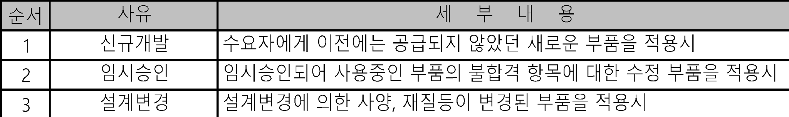
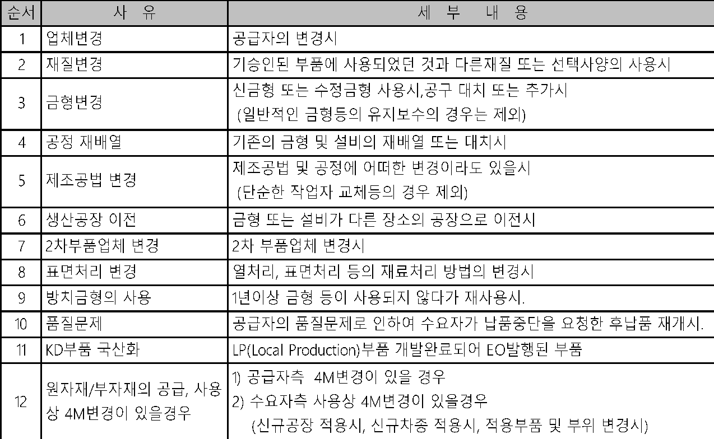
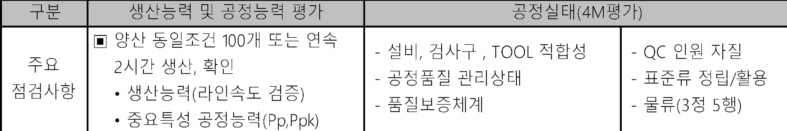
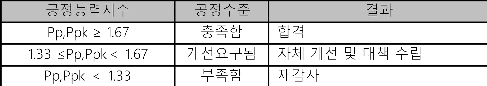
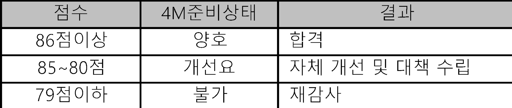
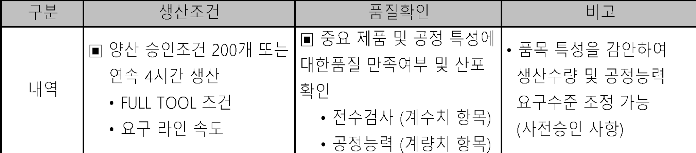
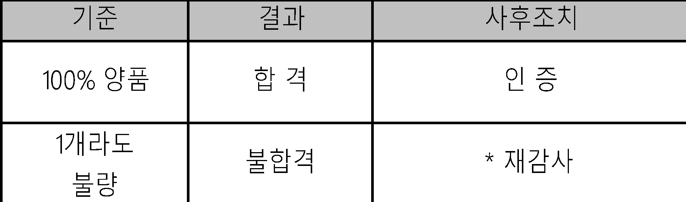
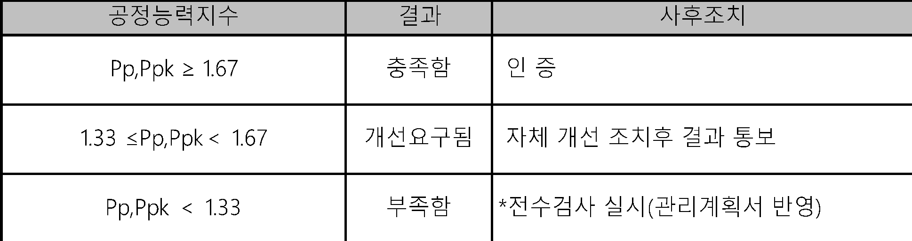
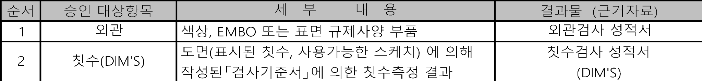
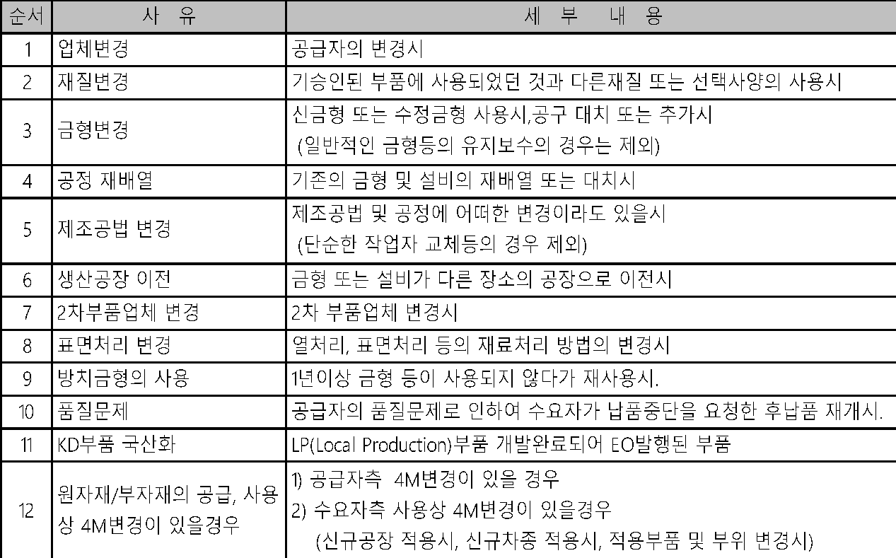
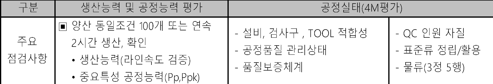
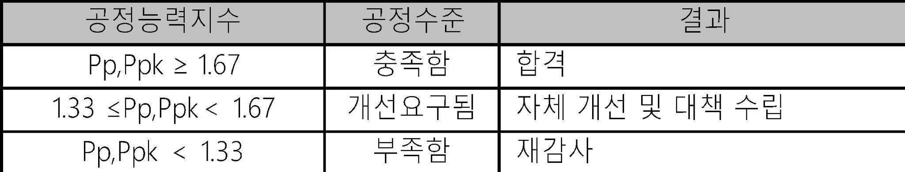
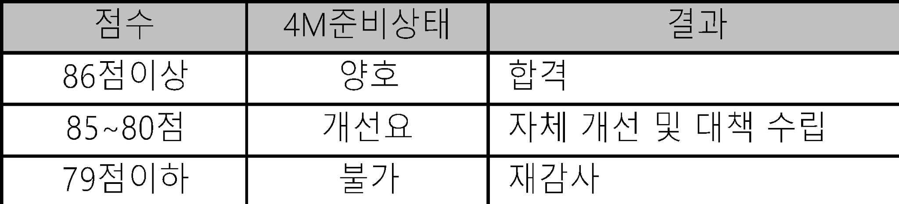
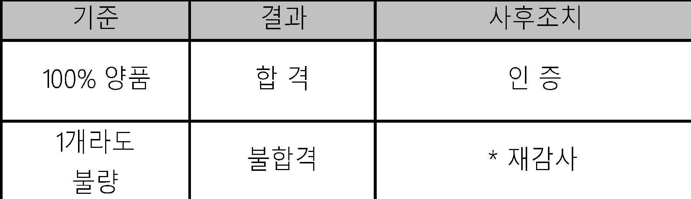
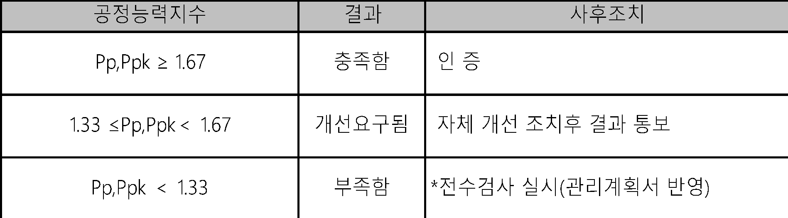
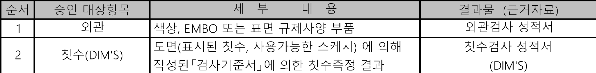
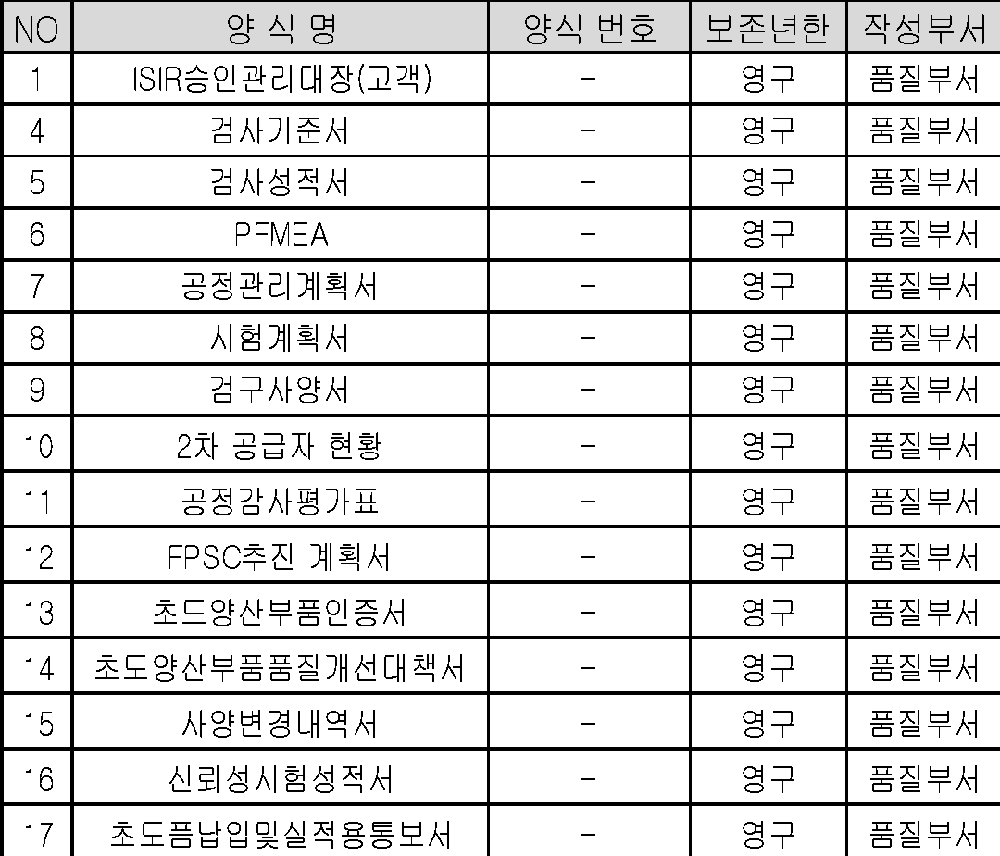
| 승인대상항목 | 순서 | 세 부 내 용 | NO | 양 식 명 | 양식 번호 | 보존연한 | 작성부서 | ||||||||||||||||||||||||||||||
| 1 | 외관 | 외관검사 성적서 | 1 | ISIR승인관리대장(고객) | - | 영구 | 품질팀 | NO | 표 준 명 | 표 준 번 호 | 비 고 | ||||||||||||||||||||||||||
| 2 | 치수(DIM'S) | 4 | 검사기준서 | - | 영구 | 품질팀 | 1 | 문서화된정보관리프로세스 | _ | ||||||||||||||||||||||||||||
| 5 | 검사성적서 | - | 영구 | 품질팀 | 2 | 외부공급자관리프로세스 | _ | ||||||||||||||||||||||||||||||
| 승인대상부품 1 | 순서 | 사유 | 세 부 내 용 | 6 | PFMEA | - | 영구 | 품질팀 | 3 | 설비보전관리프로세스 | _ | ||||||||||||||||||||||||||
| 1 | 신규개발 | 수요자에게 이전에는 공급되지 않았던 새로운 부품을 적용시 | 7 | 공정관리계획서 | - | 영구 | 품질팀 | 4 | 검사업무프로세스 | _ | |||||||||||||||||||||||||||
| 2 | 임시승인 | 임시승인되어 사용중인 부품의 불합격 항목에 대한 수정 부품을 적용시 | 8 | 시험계획서 | - | 영구 | 품질팀 | ||||||||||||||||||||||||||||||
| 3 | 설계변경 | 설계변경에 의한 사양, 재질등이 변경된 부품을 적용시 | 9 | 검구사양서 | - | 영구 | 품질팀 | ||||||||||||||||||||||||||||||
| 승인대상부품 2 | 순서 | 사 유 | 세 부 내 용 | 10 | 2차 공급자 현황 | - | 영구 | 품질팀 | |||||||||||||||||||||||||||||
| 1 | 업체변경 | 공급자의 변경시 | 11 | 공정감사평가표 | - | 영구 | 품질팀 | ||||||||||||||||||||||||||||||
| 2 | 재질변경 | 기승인된 부품에 사용되었던 것과 다른재질 또는 선택사양의 사용시 | 12 | FPSC추진 계획서 | - | 영구 | 품질팀 | ||||||||||||||||||||||||||||||
| 3 | 금형변경 | 13 | 초도양산부품인증서 | - | 영구 | 품질팀 | |||||||||||||||||||||||||||||||
| 14 | 초도양산부품품질개선대책서 | - | 영구 | 품질팀 | |||||||||||||||||||||||||||||||||
| 4 | 공정 재배열 | 기존의 금형 및 설비의 재배열 또는 대치시 | 15 | 사양변경내역서 | - | 영구 | 품질팀 | ||||||||||||||||||||||||||||||
| 5 | 제조공법 변경 | 16 | 신뢰성시험성적서 | - | 영구 | 품질팀 | |||||||||||||||||||||||||||||||
| 17 | 초도품납입및실적용통보서 | - | 영구 | 품질팀 | |||||||||||||||||||||||||||||||||
| 6 | 생산공장 이전 | 금형 또는 설비가 다른 장소의 공장으로 이전시 | |||||||||||||||||||||||||||||||||||
| 7 | 2차부품업체 변경 | 2차 부품업체 변경시 | |||||||||||||||||||||||||||||||||||
| 8 | 표면처리 변경 | 열처리, 표면처리 등의 재료처리 방법의 변경시 | |||||||||||||||||||||||||||||||||||
| 9 | 방치금형의 사용 | 1년이상 금형 등이 사용되지 않다가 재사용시. | |||||||||||||||||||||||||||||||||||
| 10 | 품질문제 | 공급자의 품질문제로 인하여 수요자가 납품중단을 요청한 후납품 재개시. | |||||||||||||||||||||||||||||||||||
| 11 | KD부품 국산화 | LP(Local Production)부품 개발완료되어 EO발행된 부품 | |||||||||||||||||||||||||||||||||||
| 12 | |||||||||||||||||||||||||||||||||||||
| ISIR제출서류 | 순서 | 제출 서류 | 비 고 | 순서 | 제출서류 | 제출기준 | 비고 | ||||||||||||||||||||||||||||||
| 1 | 초도품보증서 | ISIR승인서 | 1 | 초도품보증서 | ◆ | ISIR승인서 | |||||||||||||||||||||||||||||||
| 2 | 검사협정서 (갑지) | 2 | 검사협정서(갑지/을지) | ◆ | |||||||||||||||||||||||||||||||||
| 3 | 검사기준서(갑/을지) | 3 | 검사기준서(갑지/을지) | ◆ | |||||||||||||||||||||||||||||||||
| 4 | 외관,치수검사 성적서(DIM'S) | 4 | 검사성적서(갑지/을지) | ◆ | |||||||||||||||||||||||||||||||||
| 5 | 관리계획서(CONTROL PLAN) | 5 | 사양변경내역서 | ◆ | |||||||||||||||||||||||||||||||||
| 6 | 신뢰성 시험 성적서(MS,ES) | 6 | ITEM LIST | ◆ | |||||||||||||||||||||||||||||||||
| 7 | 검구/측정보조구 LIST,검사성적서 | 7 | 신뢰성성적서 | ▲ ◇ | |||||||||||||||||||||||||||||||||
| 8 | 공정감사평가표 | 8 | 제조공정도 | ▲ ◇ | |||||||||||||||||||||||||||||||||
| 9 | SAMPLE | 9 | 관리계획서 | ▲ ◇ | |||||||||||||||||||||||||||||||||
| 검사협정서 제출범위 | 순서 | 제 출 범 위(양식명) | 비 고 | 10 | P-FMEA | ▲ ◇ | |||||||||||||||||||||||||||||||
| 1 | 검사협정서 | 순서 | 제출서류 | 제출기준 | 비고 | ||||||||||||||||||||||||||||||||
| 2 | 검사기준서 | 11 | 공정감사평가표 | ▲ ◇ | |||||||||||||||||||||||||||||||||
| 3 | 공정관리 계획서(CONTROL PLAN) | 12 | 공정능력평가서 | ▲ ◇ | |||||||||||||||||||||||||||||||||
| 4 | 시험계획서 | 시험장비 현황 포함 | 13 | 도면 | ◆ | ||||||||||||||||||||||||||||||||
| 5 | 2차 공급자 현황 | 14 | SAMPLE | ◆ | |||||||||||||||||||||||||||||||||
| 6 | PFMEA | REMARK | ◆ : 제출후 사본 보유 , ◇ : 별도보관유지후 요구시 제출 , ▲ : 초도 제출 | ||||||||||||||||||||||||||||||||||
| 7 | 검구 사양서(CHECKER FIXTURE PLANNING SHEET) | ||||||||||||||||||||||||||||||||||||
| 8 | 2차, 3차 공급업체와의 검사협정 사본 | ||||||||||||||||||||||||||||||||||||
| 9 | 공정감사 추진계획서 | ||||||||||||||||||||||||||||||||||||
| 검사협정단계 | 부품구분 | 보안(법규)부품 | 중요부품 | 일반부품 | |||||||||||||||||||||||||||||||||
| 정기검사 주기 | 1회/3개월 | 1회/6개월 | 1회/12개월 | ||||||||||||||||||||||||||||||||||
| 초도양산부품인증(FPSC) 기준 | 구분 | 생산조건 | 품질확인 | 비고 | |||||||||||||||||||||||||||||||||
| 내역 | |||||||||||||||||||||||||||||||||||||
| 전수검사확인 | 기준 | 결과 | 사후조치 | ||||||||||||||||||||||||||||||||||
| 100% 양품 | 합 격 | 인 증 | |||||||||||||||||||||||||||||||||||
| 불합격 | |||||||||||||||||||||||||||||||||||||
| 공정능력확인 | 공정능력지수 | 결과 | 사후조치 | ||||||||||||||||||||||||||||||||||
| Pp,Ppk ≥ 1.67 | 충족함 | 인 증 | |||||||||||||||||||||||||||||||||||
| 1.33 ≤Pp,Ppk＜ 1.67 | 개선요구됨 | 자체 개선 조치후 결과 통보 | |||||||||||||||||||||||||||||||||||
| Pp,Ppk ＜ 1.33 | 부족함 | *전수검사 실시(관리계획서 반영) | |||||||||||||||||||||||||||||||||||
| 공정감사 평가기준 | 구분 | 생산능력 및 공정능력 평가 | 공정실태(4M평가) | ||||||||||||||||||||||||||||||||||
| 공정능력 평가 | 공정능력지수 | 공정수준 | 결과 | ||||||||||||||||||||||||||||||||||
| Pp,Ppk ≥ 1.67 | 충족함 | 합격 | |||||||||||||||||||||||||||||||||||
| 1.33 ≤Pp,Ppk＜ 1.67 | 개선요구됨 | 자체 개선 및 대책 수립 | |||||||||||||||||||||||||||||||||||
| Pp,Ppk ＜ 1.33 | 부족함 | 재감사 | |||||||||||||||||||||||||||||||||||
| 공정실태평가 | 점수 | 4M준비상태 | 결과 | ||||||||||||||||||||||||||||||||||
| 86점이상 | 양호 | 합격 | |||||||||||||||||||||||||||||||||||
| 85~80점 | 개선요 | 자체 개선 및 대책 수립 | |||||||||||||||||||||||||||||||||||
| 79점이하 | 불가 | 재감사 | |||||||||||||||||||||||||||||||||||
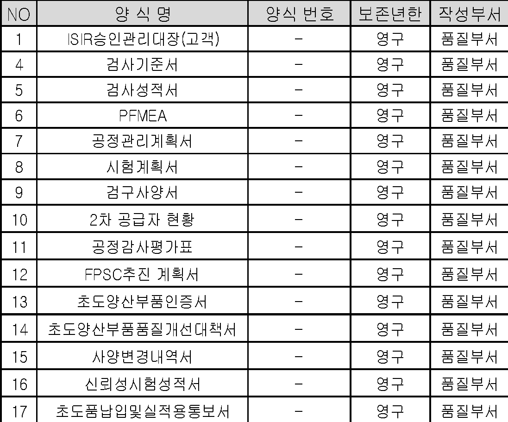